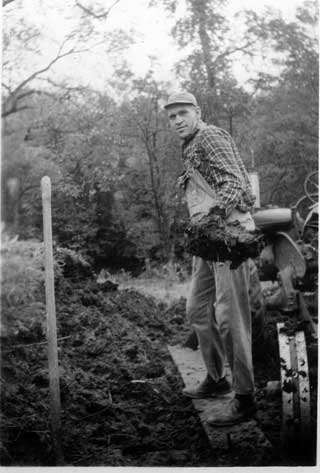

Entering the mission home in Cambridge, Massachusetts
Entering the mission home in Cambridge, Massachusetts
|
Forrest near beginning of his mission |
Forrest on his bicycle |
|
Forrest engaged in Country Tracting |
Doing laundry with doing Country Tracting |
|
Forrest showing off his height again |
Elders in South Maine district |
|
Forrest delivering Christmas presents in Maine |
Forrest with Elder Beesley and Elder Winegar |
|
Sign post in Maine |
The town of North Pownal, Maine
|
One story he tells is where they are invited to dinner by a woman who earns a living doing housework for others. When they insisted on doing the dishes, she refused. They continued to insist until she finally gave in. As they worked, they discovered that she had not washed her own dishes for months, but rather stacked them in the cupboards. They did dishes for a very long time. Another story was about a prank they played on another elder who had a strong dislike for runny eggs. He always boiled them for a long time. For their prank, they substituted fresh raw eggs for the long time boiling ones. He took one out and found it quite runny, then boiled them more for a very long time afterwards. During his mission, he spent some time at the Joseph Smith birthplace.
Joseph Smith monument near South Royalton, Vermont
A journal exists that covers nearly the last 5 months of his mission. It gives quite a feeling of the experience he and his companion in what they called "country tracting" or serving without purse or scrip. It appears from his journal in 1948 and a report in 1947 that he spent at least 4 months each year in travelling without purse or scrip. By the end of August 1947 he had spent 10 weeks "in country work", spending $8 for food and lodging. From mid June of 1948 (when the journal begins) until about the middle of October, he was doing country tracting.
The next section is a summary of some of his experiences, taken from the journal.
Map of the Bennington area of Vermont
|
The revolutionary war monument in Bennington, Vermont
|
Fun at the Vermont border
|
It appears that their daily efforts included several goals. These included finding people to teach, inviting people to meetings that they would hold, usually about once a week in some location they would arrange for, but among the goals included the need to receive meals and lodging from the local people. They would explain to people how they were travelling without means of support, but it does not appear that they resorted to any begging tactics, only relying on the good graces of the people to offer food, etc. Some days they were left without a place to stay, but usually they ended up in someone's home. They would usually have some gospel discussions with the people, sometimes holding a "cottage meeting", a more formal discussion about the gospel, but those were not very common.
Map of Poultney/Castleton area of Vermont
Some people would keep them several days at a time or would be there in case other arrangements failed. Others would have work for them to do, presumably to help pay for the food and lodging by labor. In one occasion, in East Poultney, Vermont, he and his companion helped a local farmer, Mr. Fenton haul manure (one time he referred to it: "Hauled more sunshine today."). During the time of their work, a fox attacked the farmer's chickens and Elder Service shot the fox. There is a picture of both the sunshine hauling and the fox among Forrest's pictures. In his areas of Vermont, there were quite a few people belonging to the Seventh Day Adventist Church, most of them friendly to them, though not very open to their teachings. On one occasion he sang for them.
|
 Forrest hauling "sunshine"
|
Elder Richard Sevice with fox
|
Map of the Rutland, Vermont area
In one occasion it appears that they asked to spend the night in a local church. Forrest relates concerning his inquiry: "He didn't think so, but would ask his wife. Later he came back cursing us in the Name of Jesus Christ that he didn't think much of our belief and was sorry we couldn't agree with the way he believed." Somehow, they managed to get into the church anyway (being informed of a "secret passage way" from the town hall into the church) and stayed not only one night there, but two nights.
They arranged to hold meetings, often in public buildings, usually schools, sometimes churches. On several occasions, they would also sleep in the school buildings on or around the days of their meetings.
Finding meals was a problem sometimes. Often they were fed well, but sometimes their conditions were meager. Some days they would need to eat food, usually sandwiches, that were given to them days earlier, at least in one occasion at least a week earlier. Forrest complained of stomach problems in several places. I wonder about the condition of the food they ate at times.
Personal hygiene was mentioned little, but in a few places he mentions going to the stream to wash up and shave. A few places offered to let them bathe. At one point he mentions purchasing some alum at the store as a deodorant. They washed their clothes in nearby streams. Forrest mentioned a few times repairing his clothes, including: "Sewed the press in [his pants] and patched the knee and the seat. Trying to make it last for the summer." He did visit a couple of doctors, for his stomach, kidney and, in the end, fatigue. He also had his eyes checked and after a visit to the dentist he commented: "He sure did a fine job. Filled five cavities and only charged me $13.00. Also gave me a cleaning job. The best I've ever had."
One time he describes himself coming down with a cold or flu which lasted about a week. He and his companion were staying at the home of some people they met tracting, the Don and Barbara Dekker or Decker family of Castleton, Vermont. His companion also came down with the sickness. It seems amazing to me that they put them up for this long as they struggled with sickness. He and his companion later did some significant work for the Deckers and he hoped that they some day would come into the church.
His work with the people also put them into some strange situations. One man they were staying with attempted suicide while they were there (in another room). Fortunately, they were able to get him treated and to the hospital. From later writings it appears that he was doing better. One man, a member of the church, was dealing with financial or business failure (which caused him to have a nervous breakdown) and sent his wife and child(ren) to live in a trailer home while he went off to try to solve his business problems "alone". Forrest and his companion felt it important to check up on the family occasionally.
The workings of the church appeared to be limited or even completely lacking in the areas where he and his companion worked. In the time period of his journal, there is no mention whatsoever of attending church meetings with members, even Sacrament meeting or Priesthood meeting. One place he mentions a member who gives them "ten dollars to turn into the branch for fast offering and also for us to keep some of it." He does mention holding a "sacrament" meeting several times with individuals, usually non-members and often on a weekday evening. There is never mentioned a bishop, branch president or any other church official in the 5 months of the journal entries. He does meet with his mission president twice or three times and once mentions meeting with a member and receiving tracts, pamphlets and materials for his work.
One thing he specifically mentioned as enjoyable was listening to the Tabernacle Choir and Organ broadcast. This happened a number of times, usually at the home of someone who put them up for the night. He mentions a few times of singing to people, stating that they seemed to enjoy it.
In all his work, there is not any indication that any of the people they taught, really progressed much towards accepting the church and its teachings. He mentioned one person who had given up smoking for a week, but returned to the habit, "as bad as ever". You can tell that he was discouraged by it, quite uncharacteristic in his writing, describing the family when they returned that "they weren't interested in our appearance there. We were just one of the dozens of flies pestering the household." He says that they stayed the night with them anyway.
They scheduled and held a number of meetings, but in nearly every case, no one came. They held their meetings anyway, usually a study time for him and his companion. In one case, they scheduled a meeting and got the keys to the building (often the more difficult part of the task), and found that the keys did not work, so they "had to remove the bolts out of the hinges to be able to hold the meeting." That particular meeting at least was somewhat productive because a few people came and "when we were closing, another fellow came in. After the meeting we talked quite a bit on religion and other stuff. We asked the fellow if we could sleep in his barn and he said sure. So after we put the hinge back on the door, we went up to his place, but he decided to share his house with us. We had a delicious supper, the opportunity to take a bath and to rest very well." Then he added in his writing: "We saw the cutest pair of twin fawns today, sure pretty." He seemed to always find to opportunity to see beauty wherever he was.
Forrest had two companions during these last five months, Elder Hamilton from Missouri and Elder Service from Holladay, Utah. It is interesting to note that Elder Service was married at the time and at one point received a package from his wife. In one of his sick times, he mentions that his companion "has been swimming most of the day" while he recuperated. For those not acquainted with present day missionary rules, swimming is strictly forbidden now.
Forrest mentions one experience when he and his companion (Elder Hamilton) went to South Royalton, Vermont to join other elders and missionaries for celebration at the Joseph Smith monument. This took place on July 24, 1948. It is interesting that Forrest was "elected" to be the cook for the weekend. He cooked chili, made sandwiches and rice pudding. He also worked at taking the official sign and making "a sealtite job" of it (in picture at the left). He describes the day of the festivities: "All the Elders left for the monument and left me here. So I fixed some sandwiches and about noon I got ready and a truck came back for something and were surprised that I was still here. So they took me up with the bunch. We had an enjoyable day with the association with all the Elders. Especially with Elder Kezerian. In the afternoon we played softball and later on had a good spiritual feast. Bro. Fugal and Pres. Young both spoke, and I sang twice in a double mixed quartet and once in a quartet. Then many of the people left. Later on we had a couple of comical skits. Soon the day was finished and the celebration was over. We went back to the chapel. We stopped at the store and I bought $11.00 worth of food for Sunday."
Forrest was released from his mission on December 15, 1948. He says in his written history that upon his return, the bishop was unable to schedule a time for him to report his mission, asking him to wait a few months. He had nothing to keep him in Idaho Falls, so he returned to Tremonton and never did report his mission.
Appendix A - Life Timeline
Appendix B - Histories and journals
Appendix C - Mission Journal
Appendix D - Recipes